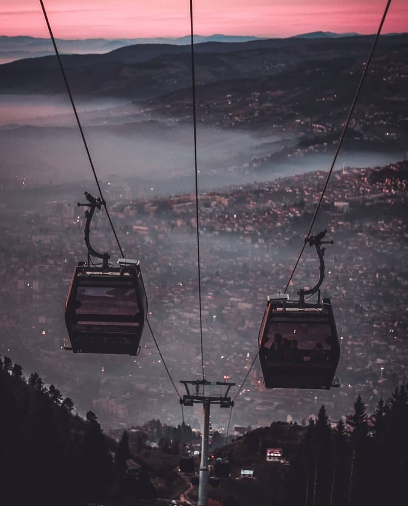

Trebevićka žičara, ili kako su je starije Sarajlije zvale - uspinjača, sa radom je počela 3. maja 1959, postavši jednim od prepoznatljivih simbola glavnog grada BiH. Trasa žičare, koja je povezivala naselje Bistrik na lijevoj obali Miljacke sa Trebevićem, omiljenim gradskim izletištem, „plućima Sarajeva”, bila je dugačka 2.100 metara. Polazna stanica se nalazila u ulici Avdage Šahinagića preko puta sarajevske Vijećnice, a dolazila je na Vidikovac na Trebeviću na 1160 m/nv. Visinka razlika je bila preko 500 metara, a sistem je imao 50 kabina kapaciteta po 4 putnika.
Vožnja je trajala 12 minuta, a za jedan sat se moglo prevesti 800 putnika u oba pravca. Na polaznoj i dolaznoj stanici su izgrađene čekaonice sa bifeima, a na dolaznoj stanici na Vidikovcu kasnije je sagrađen istoimeni restoran. Svojom dužinom od 2.100 metara, trebevićka žičara bila je jedna od najznačajnijih u bivšoj Jugoslaviji, a jedna od rijetkih uopće koja polazi iz samog centra grada i za 12 minuta vas dovodi u netaknutu prirodu, oazu čistog zraka.
 Već sa prvim danima rata 1992. godine žičara je uništena, zajedno sa polaznom i dolaznom stanicom na Trebeviću, potpuno uništena, a Trebević je postao prvom linijom fronte. Nakon poslijeratnih dešavanja, žičara i dalje nije obnovljena i puštena u rad sve do 2018. godine. Zvanično je rekonstruirana tijekom 2017. i 2018. godine i službeno je otvorena 6. travnja 2018. Novi sustav čine ukupno 33 moderne gondole koje mogu prevesti do 1.200 putnika na sat iz grada do Trebevića, a put u jednom smjeru traje otprilike 7 minuta. Od 33 gondole pet je u bojama olimpijskih krugova – plavoj, crvenoj, žutoj, zelenoj i crnoj; jedna je u boji zastave BiH, a ostale su crne.
Cijena jednosmjerne vožnje žičarom za građane BiH je 4 KM, dok povratna karta košta 6 KM, dok jednosmjerna karta za turiste košta 15 KM, a povratna 20 KM. Za sad se karte mogu kupiti samo na polaznoj stanici, a uskoro će se moći kupiti i u Vijećnici, kao i na dolaznoj stanici.